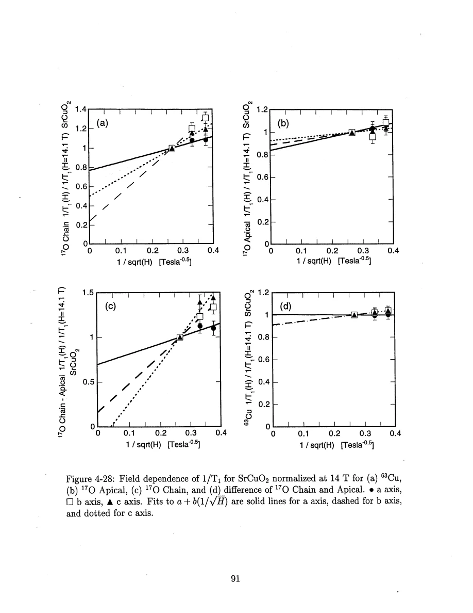
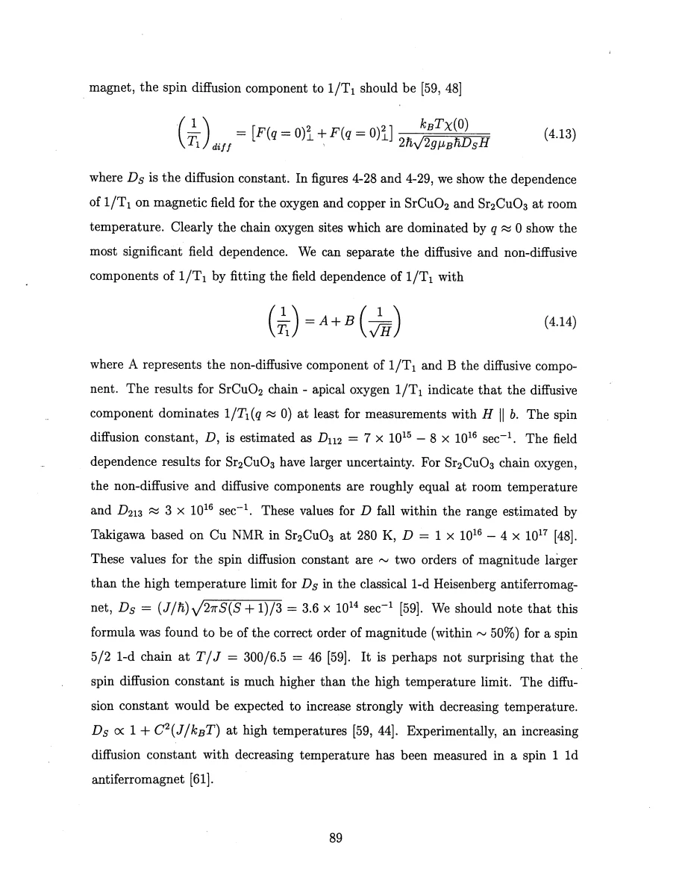

Thurber · supplied source 1999 · chapter unit
Field dependence and the historical diffusion interpretation
A near-uniform rate that rises approximately as 1/√H is evidence for a low-frequency channel in the real material, under a specified diffusion model.
The question: What does changing resonance frequency add to a temperature scan of a chain?
Before you start: the terms you need
- Spin-1/2 Heisenberg antiferromagnet: neighboring electron spins interact through J Sᵢ·Sⱼ with J>0.
- Hyperfine coupling: the electronic spin polarization produces a local magnetic field at a nucleus.
- Wave vector q: distinguishes uniform spin fluctuations near q=0 from staggered fluctuations near the antiferromagnetic vector Q.
- Correlation length ξ: a distance over which staggered electron-spin correlations remain appreciable.
- NMR/NQR: applied-field magnetic resonance versus resonance in the electric field gradient with no applied static field.
- Historical scope: these are experiments and interpretations reported in the supplied 1999 thesis, not a current review of quantum-spin transport.
See → explain → check
Follow the idea in 2 pictures.
Picture 1 / 2
Frequency is a separate experimental control
Look for: Changing H changes ωn, while the temperature is held near room temperature.
Swipe across the picture to read every label, or enlarge it below.
- Change field H
- Change nuclear ωn
- Measure oxygen T₁
- Compare 1/√H
Teaching schematic. A+B/√H is the historical fitted model. Electronic field effects, tensor directions and possible cutoffs limit interpreting H only as a frequency knob.
A field scan tests a time-dependent channel that a temperature scan cannot uniquely identify.
Picture 2 / 2
Separate observation from diffusion model
Look for: The site-dependent field enhancement is measured; the conserved-spin spreading model supplies the explanation.
Swipe across the picture to read every label, or enlarge it below.
- Observed field dependence
- Assume diffusive spectrum
- Infer Ds and cutoff limits
Teaching schematic. Actual SrCuO₂ and Sr₂CuO₃, not a universal assertion about ideal-chain transport. The original rate data remain in Fig.4-28 and Fig.4-29.
A model-dependent diffusion constant should remain labeled as an inference.
Check the original: PDF p. 88 · PDF p. 89 · PDF p. 90 · PDF p. 91
Explain it back.
Try answering aloud before opening the explanation.
What would a horizontal line in R versus 1/√H indicate within this fitting model?
It would indicate B≈0 in the measured range, so no detected inverse-square-root field contribution. It would not prove that all dynamics are absent.
Why can a field fit not settle the temperature dependence of the diffusion constant?
The field data here constrain a room-temperature spectral channel. Extending that result over T requires additional assumptions or frequency scans at those temperatures.
Go deeper Follow the full argument
Temperature alone cannot identify the time dependence
The oxygen site comparisons establish that substantial near-uniform fluctuations remain after the staggered channel is suppressed or subtracted. They do not by themselves establish how those fluctuations evolve in time. The thesis therefore changes the magnetic field, which changes the nuclear resonance frequency, and measures T₁ again at room temperature. In the diffusion model discussed here a conserved spin component spreads along a chain. The long-time correlation decays as t⁻¹ᐟ² in one dimension, giving a low-frequency spectral enhancement proportional to ω⁻¹ᐟ². This is a hypothesis to test in the actual copper-oxide compounds. The chapter also discusses theoretical objections to ordinary diffusion in the ideal quantum Heisenberg chain and the possibility that extra lattice or anisotropic interactions matter. Preserve that tension: a measured frequency dependence is the observation, and ordinary spin diffusion is the model interpretation used in the thesis.
Read the field fit as a two-channel decomposition
The empirical field form is 1/T₁=A+B/√H. A is the field-independent component within that model; B sets the enhanced low-frequency contribution. Figure 4-28 compares chain oxygen, apical oxygen, their difference and copper, with rates normalized to their values at 14.1 T. The largest dependence occurs at the chain site and in the difference signal, as expected for a near-uniform channel. For SrCuO₂, particularly H parallel to b, Thurber concludes that the diffusive contribution dominates the extracted uniform rate. Its inferred diffusion constant spans about 7×10¹⁵–8×10¹⁶ s⁻¹ in the lattice-spacing convention. Sr₂CuO₃ has larger uncertainties and roughly comparable diffusive and non-diffusive contributions at room temperature. Those constants are not lengths squared per second without restoring a lattice spacing. They are extracted through hyperfine amplitudes and the assumed diffusion response; they are not directly measured travel speeds.
Finite cutoffs and uncertain temperature extrapolation remain
An actual chain has small interchain coupling, anisotropic interactions, defects or other channels that can break the assumptions behind an unlimited one-dimensional diffusion law. Below a cutoff frequency the spectral enhancement can level off. The room-temperature finite-field measurements do not test an arbitrarily low-frequency limit. The thesis compares the inferred constants with a classical high-temperature estimate and finds values much larger at its much lower reduced temperature T/J≈0.13. This is a comparison of regimes, not a failure of unit conversion. It speculates that the T² term of Sr₂CuO₃ oxygen relaxation could imply a diffusion constant increasing as the inverse square of temperature, but that conclusion assumes the term is diffusion dominated. SrCuO₂ behaves differently, plausibly because of the frustrated coupling between chains. The unresolved copper rate anisotropy and the poorer precision of the single-chain field fit are retained as open issues, not hidden by an idealized curve.
PDF p. 85 · PDF p. 88 · PDF p. 89 · PDF p. 90 · PDF p. 91 · PDF p. 92
Translate the mathematics Essential equations and their meaning
S(t)∝t^(−1/2) → S(ω)∝ω^(−1/2)
Symbols: S: spin correlation or its low-frequency spectrum; t: time; ω: frequency.
One-dimensional diffusion model for a conserved component in its applicable low-frequency window. Extra couplings can impose a cutoff.
R(H)=A+B/√H
Symbols: R=1/T₁; H: static field; A,B: fitted channel amplitudes.
Finite-field decomposition at room temperature. The equation cannot establish diffusion at all temperatures or zero frequency.
Read the evidence Guided original source pages

PDF p. 91

PDF p. 89
What the evidence supports—and where it stops
- The diffusion account is the 1999 source interpretation and remains distinct from a current survey of ideal-chain transport.
- Frequency cutoffs and hyperfine uncertainties limit the inferred constant.
- Fig.4-28 has a caption/panel ordering inconsistency; the guide follows the labels printed in each panel.
Source version, reading coverage and preservation
Read all extracted substantive text on one-based PDF pages 14–204, including chapters 1–8 and appendices A–C; checked the title and abstract and visually inspected 66 full rendered pages for cited figures, formulas, tensor conventions and extraction ambiguities. PDF page numbers match the printed body page numbers.
Reviewed body pages: 14, 15, 16, 17, 18, 19, 20, 21, 22, 23, 24, 25, 26, 27, 28, 29, 30, 31, 32, 33, 34, 35, 36, 37, 38, 39, 40, 41, 42, 43, 44, 45, 46, 47, 48, 49, 50, 51, 52, 53, 54, 55, 56, 57, 58, 59, 60, 61, 62, 63, 64, 65, 66, 67, 68, 69, 70, 71, 72, 73, 74, 75, 76, 77, 78, 79, 80, 81, 82, 83, 84, 85, 86, 87, 88, 89, 90, 91, 92, 93, 94, 95, 96, 97, 98, 99, 100, 101, 102, 103, 104, 105, 106, 107, 108, 109, 110, 111, 112, 113, 114, 115, 116, 117, 118, 119, 120, 121, 122, 123, 124, 125, 126, 127, 128, 129, 130, 131, 132, 133, 134, 135, 136, 137, 138, 139, 140, 141, 142, 143, 144, 145, 146, 147, 148, 149, 150, 151, 152, 153, 154, 155, 156, 157, 158, 159, 160, 161, 162, 163, 164, 165, 166, 167, 168, 169, 170, 171, 172, 173, 174, 175, 176, 177, 178, 179, 180, 181, 182, 183, 184, 185, 186, 187, 188, 189, 190, 191, 192, 193, 194, 195, 196, 197, 198, 199, 200, 201, 202, 203, 204. Bibliography pages 205–212 were not independently verified against the cited external works. The guide explains final results and assumptions rather than reproducing every algebraic step, electronics part number or data point. Remaining rendered pages not listed in the private review were not claimed as visually read.
Source SHA-256: aca6c34f95675f0fb188d45f9148bacce2e832f0956949025eae42f1e1abf618. Original file bytes preserved locally, and in this room’s original download.
Thesis - Thurber - 1999 - O and Cu NMR spin dynamics in low dimensional antiferromagnets.pdf